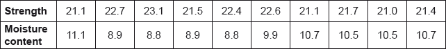
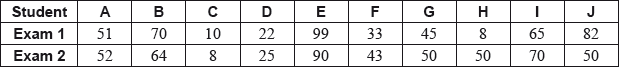
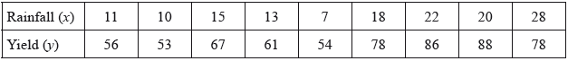

HL Paper 3
The weights, X kg, of the males of a species of bird may be assumed to be normally distributed with mean 4.8 kg and standard deviation 0.2 kg.
The weights, Y kg, of female birds of the same species may be assumed to be normally distributed with mean 2.7 kg and standard deviation 0.15 kg.
Find the probability that a randomly chosen male bird weighs between 4.75 kg and 4.85 kg.
Find the probability that the weight of a randomly chosen male bird is more than twice the weight of a randomly chosen female bird.
Two randomly chosen male birds and three randomly chosen female birds are placed on a weighing machine that has a weight limit of 18 kg. Find the probability that the total weight of these five birds is greater than the weight limit.
The random variables \(U,{\text{ }}V\) follow a bivariate normal distribution with product moment correlation coefficient \(\rho \).
A random sample of 12 observations on U, V is obtained to determine whether there is a correlation between U and V. The sample product moment correlation coefficient is denoted by r. A test to determine whether or not U, V are independent is carried out at the 1% level of significance.
State suitable hypotheses to investigate whether or not \(U\), \(V\) are independent.
Find the least value of \(|r|\) for which the test concludes that \(\rho \ne 0\).
A biased cubical die has its faces labelled \(1,{\rm{ }}2,{\rm{ }}3,{\rm{ }}4,{\rm{ }}5\) and \(6\). The probability of rolling a \(6\) is \(p\), with equal probabilities for the other scores.
The die is rolled once, and the score \({X_1}\) is noted.
(i) Find \({\text{E}}({X_1})\).
(ii) Hence obtain an unbiased estimator for \(p\).
The die is rolled a second time, and the score \({X_2}\) is noted.
(i) Show that \(k({X_1} - 3) + \left( {\frac{1}{3} - k} \right)({X_2} - 3)\) is also an unbiased estimator for \(p\) for all values of \(k \in \mathbb{R}\).
(ii) Find the value for \(k\), which maximizes the efficiency of this estimator.
It is known that the standard deviation of the heights of men in a certain country is \(15.0\) cm.
One hundred men from that country, selected at random, had their heights measured.
The mean of this sample was \(185\) cm. Calculate a \(95\% \) confidence interval for the mean height of the population.
A second random sample of size \(n\) is taken from the same population. Find the minimum value of \(n\) needed for the width of a \(95\% \) confidence interval to be less than \(3\) cm.
The strength of beams compared against the moisture content of the beam is indicated in the following table. You should assume that strength and moisture content are each normally distributed.

Determine the product moment correlation coefficient for these data.
Perform a two-tailed test, at the \(5\% \) level of significance, of the hypothesis that strength is independent of moisture content.
If the moisture content of a beam is found to be \(9.5\), use the appropriate regression line to estimate the strength of the beam.
Anna cycles to her new school. She records the times taken for the first ten days with the following results (in minutes).
12.4 13.7 12.5 13.4 13.8 12.3 14.0 12.8 12.6 13.5
Assume that these times are a random sample from the \({\text{N}}(\mu ,{\text{ }}{\sigma ^2})\) distribution.
(a) Determine unbiased estimates for \(\mu \) and \({\sigma ^2}\).
(b) Calculate a 95 % confidence interval for \(\mu \).
(c) Before Anna calculated the confidence interval she thought that the value of \(\mu \) would be 12.5. In order to check this, she sets up the null hypothesis \({{\text{H}}_0}:\mu = 12.5\).
(i) Use the above data to calculate the value of an appropriate test statistic. Find the corresponding p-value using a two-tailed test.
(ii) Interpret your p-value at the 1 % level of significance, justifying your conclusion.
The random variable X has a geometric distribution with parameter p .
Show that \({\text{P}}(X \leqslant n) = 1 - {(1 - p)^n},{\text{ }}n \in {\mathbb{Z}^ + }\) .
Deduce an expression for \({\text{P}}(m < X \leqslant n)\,,{\text{ }}m\,,{\text{ }}n \in {\mathbb{Z}^ + }\) and m < n .
Given that p = 0.2, find the least value of n for which \({\text{P}}(1 < X \leqslant n) > 0.5\,,{\text{ }}n \in {\mathbb{Z}^ + }\) .
In this question you may assume that these data are a random sample from a bivariate normal distribution, with population product moment correlation coefficient \(\rho \).
Richard wishes to do some research on two types of exams which are taken by a large number of students. He takes a random sample of the results of 10 students, which are shown in the following table.

Using these data, it is decided to test, at the 1% level, the null hypothesis \({H_0}:\rho = 0\) against the alternative hypothesis \({H_1}:\rho > 0\).
Richard decides to take the exams himself. He scored 11 on Exam 1 but his result on Exam 2 was lost.
Caroline believes that the population mean mark on Exam 2 is 6 marks higher than the population mean mark on Exam 1. Using the original data from the 10 students, it is decided to test, at the 5% level, this hypothesis against the alternative hypothesis that the mean of the differences, \({\text{d}} = {\text{exam 2 mark }} - {\text{ exam 1 mark}}\), is less than 6 marks.
For these data find the product moment correlation coefficient, \(r\).
(i) State the distribution of the test statistic (including any parameters).
(ii) Find the \(p\)-value for the test.
(iii) State the conclusion, in the context of the question, with the word “correlation” in your answer. Justify your answer.
Using a suitable regression line, find an estimate for his score on Exam 2, giving your answer to the nearest integer.
(i) State the distribution of your test statistic (including any parameters).
(ii) Find the \(p\)-value.
(iii) State the conclusion, justifying the answer.
A random variable \(X\) is distributed with mean \(\mu \) and variance \({\sigma ^2}\). Two independent random samples of sizes \({n_1}\) and \({n_2}\) are taken from the distribution of \(X\). The sample means are \({\bar X_1}\) and \({\bar X_2}\) respectively.
Show that \(U = a{\bar X_1} + (1 - a){\bar X_2},{\text{ }}a \in \mathbb{R}\), is an unbiased estimator of \(\mu \).
Show that \({\text{Var}}(U) = {a^2}\frac{{{\sigma ^2}}}{{{n_1}}} + {(1 - a)^2}\frac{{{\sigma ^2}}}{{{n_2}}}\).
Find, in terms of \({n_1}\) and \({n_2}\), an expression for \(a\) which gives the most efficient estimator of this form.
Hence find an expression for the most efficient estimator and interpret the result.
A teacher has forgotten his computer password. He knows that it is either six of the letter J followed by two of the letter R (i.e. JJJJJJRR) or three of the letter J followed by four of the letter R (i.e. JJJRRRR). The computer is able to tell him at random just two of the letters in his password.
The teacher decides to use the following rule to attempt to find his password.
If the computer gives him a J and a J, he will accept the null hypothesis that his password is JJJJJJRR.
Otherwise he will accept the alternative hypothesis that his password is JJJRRRR.
(a) Define a Type I error.
(b) Find the probability that the teacher makes a Type I error.
(c) Define a Type II error.
(d) Find the probability that the teacher makes a Type II error.
The random variable X has the negative binomial distribution NB(3, p) .
Let \(f(x)\) denote the probability that X takes the value x .
(i) Write down an expression for \(f(x)\) , and show that
\[\ln f(x) = 3\ln \left( {\frac{p}{{1 - p}}} \right) + \ln (x - 1) + \ln (x - 2) + x\ln (1 - p) - \ln 2{\text{ .}}\]
(ii) State the domain of f .
(iii) The domain of f is extended to \(]2,{\text{ }}\infty [\) . Show that
\(\frac{{f'(x)}}{{f(x)}} = \frac{1}{{x - 1}} + \frac{1}{{x - 2}} + \ln (1 - p){\text{ .}}\)
Jo has a biased coin which has a probability of 0.35 of showing heads when tossed. She tosses this coin successively and the \({3^{{\text{rd}}}}\) head occurs on the \({Y^{{\text{th}}}}\) toss. Use the result in part (a)(iii) to find the most likely value of Y .
Jenny and her Dad frequently play a board game. Before she can start Jenny has to throw a “six” on an ordinary six-sided dice. Let the random variable X denote the number of times Jenny has to throw the dice in total until she obtains her first “six”.
If the dice is fair, write down the distribution of X , including the value of any parameter(s).
Write down E(X ) for the distribution in part (a).
Before Jenny’s Dad can start, he has to throw two “sixes” using a fair, ordinary six-sided dice. Let the random variable Y denote the total number of times Jenny’s Dad has to throw the dice until he obtains his second “six”.
Write down the distribution of Y , including the value of any parameter(s).
Before Jenny’s Dad can start, he has to throw two “sixes” using a fair, ordinary six-sided dice. Let the random variable Y denote the total number of times Jenny’s Dad has to throw the dice until he obtains his second “six”.
Find the value of y such that \({\text{P}}(Y = y) = \frac{1}{{36}}\).
Before Jenny’s Dad can start, he has to throw two “sixes” using a fair, ordinary six-sided dice. Let the random variable Y denote the total number of times Jenny’s Dad has to throw the dice until he obtains his second “six”.
Find \({\text{P}}(Y \leqslant 6)\) .
A shop sells apples and pears. The weights, in grams, of the apples may be assumed to have a \({\text{N}}(200,{\text{ 1}}{{\text{5}}^2})\) distribution and the weights of the pears, in grams, may be assumed to have a \({\text{N}}(120,{\text{ 1}}{{\text{0}}^2})\) distribution.
(a) Find the probability that the weight of a randomly chosen apple is more than double the weight of a randomly chosen pear.
(b) A shopper buys 3 apples and 4 pears. Find the probability that the total weight is greater than 1000 grams.
A continuous random variable \(T\) has a probability density function defined by
\(f(t) = \left\{ {\begin{array}{*{20}{c}} {\frac{{t(4 - {t^2})}}{4}}&{0 \leqslant t \leqslant 2} \\ {0,}&{{\text{otherwise}}} \end{array}} \right.\).
Find the cumulative distribution function \(F(t)\), for \(0 \leqslant t \leqslant 2\).
Sketch the graph of \(F(t)\) for \(0 \leqslant t \leqslant 2\), clearly indicating the coordinates of the endpoints.
Given that \(P(T < a) = 0.75\), find the value of \(a\).
The random variables \({X_1}\) and \({X_2}\) are a random sample from \({\text{N}}(\mu ,{\text{ 2}}{\sigma ^2})\). The random variables \({Y_1}\), \({Y_2}\) and \({Y_3}\) are a random sample from \({\text{N}}(2\mu ,{\text{ }}{\sigma ^2})\).
The estimator \(U\) is used to estimate \(\mu \) where \(U = a({X_1} + {X_2}) + b({Y_1} + {Y_2} + {Y_3})\) and \(a\), \(b\) are constants.
Given that \(U\) is unbiased, show that \(2a + 6b = 1\).
Show that \({\text{Var}}(U) = (39{b^2} - 12b + 1){\sigma ^2}\).
Hence find the value of \(a\) and the value of \(b\) which give the best unbiased estimator of this form, giving your answers as fractions.
Hence find the variance of this best unbiased estimator.
The random variable X represents the height of a wave on a particular surf beach.
It is known that X is normally distributed with unknown mean \(\mu \) (metres) and known variance \({\sigma ^2} = \frac{1}{4}{\text{ (metre}}{{\text{s}}^2}{\text{)}}\) . Sally wishes to test the claim made in a surf guide that \(\mu = 3\) against the alternative that \(\mu < 3\) . She measures the heights of 36 waves and calculates their sample mean \({\bar x}\) . She uses this value to test the claim at the 5 % level.
(i) Find a simple inequality, of the form \(\bar x < A\) , where A is a number to be determined to 4 significant figures, so that Sally will reject the null hypothesis, that \(\mu = 3\) , if and only if this inequality is satisfied.
(ii) Define a Type I error.
(iii) Define a Type II error.
(iv) Write down the probability that Sally makes a Type I error.
(v) The true value of \(\mu \) is 2.75. Calculate the probability that Sally makes a Type II error.
The random variable Y represents the height of a wave on another surf beach. It is known that Y is normally distributed with unknown mean \(\mu \) (metres) and unknown variance \({\sigma ^2}{\text{ (metre}}{{\text{s}}^2}{\text{)}}\) . David wishes to test the claim made in a surf guide that \(\mu = 3\) against the alternative that \(\mu < 3\) . He is also going to perform this test at the 5 % level. He measures the heights of 36 waves and finds that the sample mean, \(\bar y = 2.860\) and the unbiased estimate of the population variance, \(s_{n - 1}^2 = 0.25\).
(i) State the name of the test that David should perform.
(ii) State the conclusion of David’s test, justifying your answer by giving the p-value.
(iii) Using David’s results, calculate the 90 % confidence interval for \(\mu \) , giving your answers to 4 significant figures.
A discrete random variable \(U\) follows a geometric distribution with \(p = \frac{1}{4}\).
Find \(F(u)\), the cumulative distribution function of \(U\), for \(u = 1,{\text{ }}2,{\text{ }}3 \ldots \)
Hence, or otherwise, find the value of \(P(U > 20)\).
Prove that the probability generating function of \(U\) is given by \({G_u}(t) = \frac{t}{{4 - 3t}}\).
Given that \({U_i} \sim {\text{Geo}}\left( {\frac{1}{4}} \right),{\text{ }}i = 1,{\text{ }}2,{\text{ }}3\), and that \(V = {U_1} + {U_2} + {U_3}\), find
(i) \({\text{E}}(V)\);
(ii) \({\text{Var}}(V)\);
(iii) \({G_v}(t)\), the probability generating function of \(V\).
A third random variable \(W\), has probability generating function \({G_w}(t) = \frac{1}{{{{(4 - 3t)}^3}}}\).
By differentiating \({G_w}(t)\), find \({\text{E}}(W)\).
A third random variable \(W\), has probability generating function \({G_w}(t) = \frac{1}{{{{(4 - 3t)}^3}}}\).
Prove that \(V = W + 3\).
The continuous random variable \(X\) has cumulative distribution function \(F\) given by \[F(x) = \left\{ {\begin{array}{*{20}{l}} {0,}&{x < 0} \\ {x{{\text{e}}^{x - 1}},}&{0 \leqslant x \leqslant 1.} \\ {1,}&{x > 2} \end{array}} \right.\]
Determine \(P(0.25 \leqslant X \leqslant 0.75)\);
Determine the median of \(X\).
Show that the probability density function \(f\) of \(X\) is given, for \(0 \leqslant x \leqslant 1\), by
\[f(x) = (x + 1){{\text{e}}^{x - 1}}.\]
Hence determine the mean and the variance of \(X\).
State the central limit theorem.
A random sample of 100 observations is obtained from the distribution of \(X\). If \(\bar X\) denotes the sample mean, use the central limit theorem to find an approximate value of \(P(\bar X > 0.65)\). Give your answer correct to two decimal places.
Adam does the crossword in the local newspaper every day. The time taken by Adam, \(X\) minutes, to complete the crossword is modelled by the normal distribution \({\text{N}}(22,{\text{ }}{5^2})\).
Beatrice also does the crossword in the local newspaper every day. The time taken by Beatrice, \(Y\) minutes, to complete the crossword is modelled by the normal distribution \({\text{N}}(40,{\text{ }}{6^2})\).
Given that, on a randomly chosen day, the probability that he completes the crossword in less than \(a\) minutes is equal to 0.8, find the value of \(a\).
Find the probability that the total time taken for him to complete five randomly chosen crosswords exceeds 120 minutes.
Find the probability that, on a randomly chosen day, the time taken by Beatrice to complete the crossword is more than twice the time taken by Adam to complete the crossword. Assume that these two times are independent.
The random variables \(X\), \(Y\) follow a bivariate normal distribution with product moment correlation coefficient \(\rho \).
A random sample of 10 observations on \(X\), \(Y\) was obtained and the value of \(r\), the sample product moment correlation coefficient, was calculated to be 0.486.
State suitable hypotheses to investigate whether or not \(X\), \(Y\) are independent.
(i) Determine the \(p\)-value.
(ii) State your conclusion at the 5% significance level.
Explain why the equation of the regression line of \(y\) on \(x\) should not be used to predict the value of \(y\) corresponding to \(x = {x_0}\), where \({x_0}\) lies within the range of values of \(x\) in the sample.
John rings a church bell 120 times. The time interval, \({T_i}\), between two successive rings is a random variable with mean of 2 seconds and variance of \(\frac{1}{9}{\text{ second}}{{\text{s}}^2}\).
Each time interval, \({T_i}\), is independent of the other time intervals. Let \(X = \sum\limits_{i = 1}^{119} {{T_i}} \) be the total time between the first ring and the last ring.
The church vicar subsequently becomes suspicious that John has stopped coming to ring the bell and that he is letting his friend Ray do it. When Ray rings the bell the time interval, \({T_i}\) has a mean of 2 seconds and variance of \(\frac{1}{{25}}{\text{ second}}{{\text{s}}^2}\).
The church vicar makes the following hypotheses:
\({H_0}\): Ray is ringing the bell; \({H_1}\): John is ringing the bell.
He records four values of \(X\). He decides on the following decision rule:
If \(236 \leqslant X \leqslant 240\) for all four values of \(X\) he accepts \({H_0}\), otherwise he accepts \({H_1}\).
Find
(i) \({\text{E}}(X)\);
(ii) \({\text{Var}}(X)\).
Explain why a normal distribution can be used to give an approximate model for \(X\).
Use this model to find the values of \(A\) and \(B\) such that \({\text{P}}(A < X < B) = 0.9\), where \(A\) and \(B\) are symmetrical about the mean of \(X\).
Calculate the probability that he makes a Type II error.
The random variables X , Y follow a bivariate normal distribution with product moment correlation coefficient ρ.
A random sample of 11 observations on X, Y was obtained and the value of the sample product moment correlation coefficient, r, was calculated to be −0.708.
The covariance of the random variables U, V is defined by
Cov(U, V) = E((U − E(U))(V − E(V))).
State suitable hypotheses to investigate whether or not a negative linear association exists between X and Y.
Determine the p-value.
State your conclusion at the 1 % significance level.
Show that Cov(U, V) = E(UV) − E(U)E(V).
Hence show that if U, V are independent random variables then the population product moment correlation coefficient, ρ, is zero.
A smartphone’s battery life is defined as the number of hours a fully charged battery can be used before the smartphone stops working. A company claims that the battery life of a model of smartphone is, on average, 9.5 hours. To test this claim, an experiment is conducted on a random sample of 20 smartphones of this model. For each smartphone, the battery life, \(b\) hours, is measured and the sample mean, \({\bar b}\), calculated. It can be assumed the battery lives are normally distributed with standard deviation 0.4 hours.
It is then found that this model of smartphone has an average battery life of 9.8 hours.
State suitable hypotheses for a two-tailed test.
Find the critical region for testing \({\bar b}\) at the 5 % significance level.
Find the probability of making a Type II error.
Another model of smartphone whose battery life may be assumed to be normally distributed with mean μ hours and standard deviation 1.2 hours is tested. A researcher measures the battery life of six of these smartphones and calculates a confidence interval of [10.2, 11.4] for μ.
Calculate the confidence level of this interval.
The random variable X has the negative binomial distribution NB(5, p), where p < 0.5, and \({\text{P}}(X = 10) = 0.05\). By first finding the value of p, find the value of \({\text{P}}(X = 11)\).
The weights of adult monkeys of a certain species are known to be normally distributed, the males with mean 30 kg and standard deviation 3 kg and the females with mean 20 kg and standard deviation 2.5 kg.
Find the probability that the weight of a randomly selected male is more than twice the weight of a randomly selected female.
Two males and five females stand together on a weighing machine. Find the probability that their total weight is less than 175 kg.
A teacher decides to use the marks obtained by a random sample of 12 students in Geography and History examinations to investigate whether or not there is a positive association between marks obtained by students in these two subjects. You may assume that the distribution of marks in the two subjects is bivariate normal.
He gives the marks to Anne, one of his students, and asks her to use a calculator to carry out an appropriate test at the 5% significance level. Anne reports that the \(p\)-value is 0.177.
State suitable hypotheses for this investigation.
State, in context, what conclusion should be drawn from this \(p\)-value.
The teacher then asks Anne for the values of the \(t\)-statistic and the product moment correlation coefficient \(r\) produced by the calculator but she has deleted these. Starting with the \(p\)-value, calculate these values of \(t\) and \(r\).
(a) The heating in a residential school is to be increased on the third frosty day during the term. If the probability that a day will be frosty is 0.09, what is the probability that the heating is increased on the \({25^{{\text{th}}}}\) day of the term?
(b) On which day is the heating most likely to be increased?
If \(X\) and \(Y\) are two random variables such that \({\text{E}}(X) = {\mu _X}\) and \({\text{E}}(Y) = {\mu _Y}\) then \({\text{Cov}}(X,{\text{ }}Y) = {\text{E}}\left( {(X - {\mu _X})(Y - {\mu _Y})} \right)\).
Prove that if \(X\) and \(Y\) are independent then \({\text{Cov}}(X,{\text{ }}Y) = 0\).
In a particular company, it is claimed that the distance travelled by employees to work is independent of their salary. To test this, 20 randomly selected employees are asked about the distance they travel to work and the size of their salaries. It is found that the product moment correlation coefficient, \(r\), for the sample is \( - 0.35\).
You may assume that both salary and distance travelled to work follow normal distributions.
Perform a one-tailed test at the \(5\% \) significance level to test whether or not the distance travelled to work and the salaries of the employees are independent.
Consider the recurrence relation
\({u_n} = 5{u_{n - 1}} - 6{u_{n - 2}},{\text{ }}{u_0} = 0\) and \({u_1} = 1\).
Find an expression for \({u_n}\) in terms of \(n\).
For every prime number \(p > 3\), show that \(p|{u_{p - 1}}\).
The students in a class take an examination in Applied Mathematics which consists of two papers. Paper 1 is in Mechanics and Paper 2 is in Statistics. The marks obtained by the students in Paper 1 and Paper 2 are denoted by \((x,{\text{ }}y)\) respectively and you may assume that the values of \((x,{\text{ }}y)\) form a random sample from a bivariate normal distribution with correlation coefficient \(\rho \) . The teacher wishes to determine whether or not there is a positive association between marks in Mechanics and marks in Statistics.
State suitable hypotheses.
The marks obtained by the 12 students who sat both papers are given in the following table.
![]()
(i) Determine the product moment correlation coefficient for these data and state its p-value.
(ii) Interpret your p-value in the context of the problem.
George obtained a mark of 63 on Paper 1 but was unable to sit Paper 2 because of illness. Predict the mark that he would have obtained on Paper 2.
Another class of 16 students sat examinations in Physics and Chemistry and the product moment correlation coefficient between the marks in these two subjects was calculated to be 0.524. Using a 1 % significance level, determine whether or not this value suggests a positive association between marks in Physics and marks in Chemistry.
The random variable X has a Poisson distribution with unknown mean \(\mu \) . It is required to test the hypotheses
\({H_0}:\mu = 3\) against \({H_1}:\mu \ne 3\) .
Let S denote the sum of 10 randomly chosen values of X . The critical region is defined as \((S \leqslant 22) \cup (S \geqslant 38)\) .
Calculate the significance level of the test.
Given that the value of \(\mu \) is actually 2.5, determine the probability of a Type II error.
The following table gives the average yield of olives per tree, in kg, and the rainfall, in cm, for nine separate regions of Greece. You may assume that these data are a random sample from a bivariate normal distribution, with correlation coefficient \(\rho \).

A scientist wishes to use these data to determine whether there is a positive correlation between rainfall and yield.
(a) State suitable hypotheses.
(b) Determine the product moment correlation coefficient for these data.
(c) Determine the associated p-value and comment on this value in the context of the question.
(d) Find the equation of the regression line of y on x.
(e) Hence, estimate the yield per tree in a tenth region where the rainfall was 19 cm.
(f) Determine the angle between the regression line of y on x and that of x on y . Give your answer to the nearest degree.
A farmer sells bags of potatoes which he states have a mean weight of 7 kg . An inspector, however, claims that the mean weight is less than 7 kg . In order to test this claim, the inspector takes a random sample of 12 of these bags and determines the weight, \(x\) kg , of each bag. He finds that \[\sum {x = 83.64;{\text{ }}\sum {{x^2} = 583.05.} } \] You may assume that the weights of the bags of potatoes can be modelled by the normal distribution \({\text{N}}(\mu ,{\text{ }}{\sigma ^2})\).
State suitable hypotheses to test the inspector’s claim.
Find unbiased estimates of \(\mu \) and \({\sigma ^2}\).
Carry out an appropriate test and state the \(p\)-value obtained.
Using a 10% significance level and justifying your answer, state your conclusion in context.
The random variable X represents the lifetime in hours of a battery. The lifetime may be assumed to be a continuous random variable X with a probability density function given by \(f(x) = \lambda {{\text{e}}^{ - \lambda x}}\), where \(x \geqslant 0\).
Find the cumulative distribution function, \(F(x)\), of X.
Find the probability that the lifetime of a particular battery is more than twice the mean.
Find the median of X in terms of \(\lambda \).
Find the probability that the lifetime of a particular battery lies between the median and the mean.
Anne is a farmer who grows and sells pumpkins. Interested in the weights of pumpkins produced, she records the weights of eight pumpkins and obtains the following results in kilograms.
\[{\text{7.7}}\quad {\text{7.5}}\quad {\text{8.4}}\quad {\text{8.8}}\quad {\text{7.3}}\quad {\text{9.0}}\quad {\text{7.8}}\quad {\text{7.6}}\]
Assume that these weights form a random sample from a \(N(\mu ,{\text{ }}{\sigma ^2})\) distribution.
Anne claims that the mean pumpkin weight is 7.5 kilograms. In order to test this claim, she sets up the null hypothesis \({{\text{H}}_0}:\mu = 7.5\).
Determine unbiased estimates for \(\mu \) and \({\sigma ^2}\).
Use a two-tailed test to determine the \(p\)-value for the above results.
Interpret your \(p\)-value at the 5% level of significance, justifying your conclusion.
The random variable X has probability distribution Po(8).
(i) Find \({\text{P}}(X = 6)\).
(ii) Find \({\text{P}}(X = 6|5 \leqslant X \leqslant 8)\).
\(\bar X\) denotes the sample mean of \(n > 1\) independent observations from \(X\).
(i) Write down \({\text{E}}(\bar X)\) and \({\text{Var}}(\bar X)\).
(ii) Hence, give a reason why \(\bar X\) is not a Poisson distribution.
A random sample of \(40\) observations is taken from the distribution for \(X\).
(i) Find \({\text{P}}(7.1 < \bar X < 8.5)\).
(ii) Given that \({\text{P}}\left( {\left| {\bar X - 8} \right| \leqslant k} \right) = 0.95\), find the value of \(k\).
The weight of tea in Supermug tea bags has a normal distribution with mean 4.2 g and standard deviation 0.15 g. The weight of tea in Megamug tea bags has a normal distribution with mean 5.6 g and standard deviation 0.17 g.
Find the probability that a randomly chosen Supermug tea bag contains more than 3.9 g of tea.
Find the probability that, of two randomly chosen Megamug tea bags, one contains more than 5.4 g of tea and one contains less than 5.4 g of tea.
Find the probability that five randomly chosen Supermug tea bags contain a total of less than 20.5 g of tea.
Find the probability that the total weight of tea in seven randomly chosen Supermug tea bags is more than the total weight in five randomly chosen Megamug tea bags.
The discrete random variable \(X\) has the following probability distribution.
\({\text{P}}(X = x) = \left\{ {\begin{array}{*{20}{l}}
{p{q^{\frac{x}{2}}}}&{{\text{for }}x = 0,{\text{ }}2,{\text{ }}4,{\text{ }}6 \ldots {\text{ where }}p + q = 1,{\text{ }}0 < p < 1.} \\
0&{{\text{otherwise}}}
\end{array}} \right.\)
Show that the probability generating function for \(X\) is given by \(G(t) = \frac{P}{{1 - q{t^2}}}\).
Hence determine \({\text{E}}(X)\) in terms of \(p\) and \(q\).
The random variable \(Y\) is given by \(Y = 2X + 1\). Find the probability generating function for \(Y\).
The random variable \(X\) follows a Poisson distribution with mean \(\lambda \). The probability generating function of \(X\) is given by \({G_X}(t) = {{\text{e}}^{\lambda (t - 1)}}\).
The random variable \(Y\), independent of \(X\), follows a Poisson distribution with mean \(\mu \).
Find expressions for \({G’_X}(t)\) and \({G’’_X}(t)\).
Hence show that \({\text{Var}}(X) = \lambda \).
By considering the probability generating function, \({G_{X + Y}}(t)\), of \(X + Y\), show that \(X + Y\) follows a Poisson distribution with mean \(\lambda + \mu \).
Show that \({\text{P}}(X = x|X + Y = n) = \left( {\begin{array}{*{20}{c}} n \\ x \end{array}} \right){\left( {\frac{\lambda }{{\lambda + \mu }}} \right)^x}{\left( {1 - \frac{\lambda }{{\lambda + \mu }}} \right)^{n - x}}\), where \(n\), \(x\) are non-negative integers and \(n \geqslant x\).
Identify the probability distribution given in part (c)(i) and state its parameters.
Consider an unbiased tetrahedral (four-sided) die with faces labelled 1, 2, 3 and 4 respectively.
The random variable X represents the number of throws required to obtain a 1.
State the distribution of X.
Show that the probability generating function, \(G\left( t \right)\), for X is given by \(G\left( t \right) = \frac{t}{{4 - 3t}}\).
Find \(G'\left( t \right)\).
Determine the mean number of throws required to obtain a 1.
Alun answers mathematics questions and checks his answer after doing each one.
The probability that he answers any question correctly is always \(\frac{6}{7}\), independently of all other questions. He will stop for coffee immediately following a second incorrect answer. Let \(X\) be the number of questions Alun answers before he stops for coffee.
Nic answers mathematics questions and checks his answer after doing each one.
The probability that he answers any question correctly is initially \(\frac{6}{7}\). After his first incorrect answer, Nic loses confidence in his own ability and from this point onwards, the probability that he answers any question correctly is now only \(\frac{4}{7}\).
Both before and after his first incorrect answer, the result of each question is independent of the result of any other question. Nic will also stop for coffee immediately following a second incorrect answer. Let \(Y\) be the number of questions Nic answers before he stops for coffee.
(i) State the distribution of \(X\), including its parameters.
(ii) Calculate \({\text{E}}(X)\).
(iii) Calculate \({\text{P}}(X = 5)\).
(i) Calculate \({\text{E}}(Y)\).
(ii) Calculate \({\text{P}}(Y = 5)\).
Two independent discrete random variables \(X\) and \(Y\) have probability generating functions \(G(t)\) and \(H(t)\) respectively. Let \(Z = X + Y\) have probability generating function \(J(t)\).
Write down an expression for \(J(t)\) in terms of \(G(t)\) and \(H(t)\).
By differentiating \(J(t)\), prove that
(i) \({\text{E}}(Z) = {\text{E}}(X) + {\text{E}}(Y)\);
(ii) \({\text{Var}}(Z) = {\text{Var}}(X) + {\text{Var}}(Y)\).
The n independent random variables \({X_1},{X_2},…,{X_n}\) all have the distribution \({\text{N}}(\mu ,\,{\sigma ^2})\).
Find the mean and the variance of
(i) \({X_1} + {X_2}\) ;
(ii) \(3{X_1}\);
(iii) \({X_1} + {X_2} - {X_3}\) ;
(iv) \(\bar X = \frac{{({X_1} + {X_2} + ... + {X_n})}}{n}\).
Find \({\text{E}}(X_1^2)\) in terms of \(\mu \) and \(\sigma \) .
Anna has a fair cubical die with the numbers 1, 2, 3, 4, 5, 6 respectively on the six faces. When she tosses it, the score is defined as the number on the uppermost face. One day, she decides to toss the die repeatedly until all the possible scores have occurred at least once.
(a) Having thrown the die once, she lets \({X_2}\) denote the number of additional throws required to obtain a different number from the one obtained on the first throw. State the distribution of \({X_2}\) and hence find \({\text{E}}({X_2})\) .
(b) She then lets \({X_3}\) denote the number of additional throws required to obtain a different number from the two numbers already obtained. State the distribution of \({X_3}\) and hence find \({\text{E}}({X_3})\) .
(c) By continuing the process, show that the expected number of tosses needed to obtain all six possible scores is 14.7.
A coin was tossed 200 times and 115 of these tosses resulted in ‘heads’. Use a two-tailed test with significance level 1 % to investigate whether or not the coin is biased.
The random variable Y is such that \({\text{E}}(2Y + 3) = 6{\text{ and Var}}(2 - 3Y) = 11\).
Calculate
(i) E(Y) ;
(ii) \({\text{Var}}(Y)\) ;
(iii) \({\text{E}}({Y^2})\) .
Independent random variables R and S are such that
\[R \sim {\text{N}}(5,{\text{ 1}}){\text{ and }}S \sim {\text{N(8, 2).}}\]
The random variable V is defined by V = 3S – 4R.
Calculate P(V > 5).
A baker produces loaves of bread that he claims weigh on average 800 g each. Many customers believe the average weight of his loaves is less than this. A food inspector visits the bakery and weighs a random sample of 10 loaves, with the following results, in grams:
783, 802, 804, 785, 810, 805, 789, 781, 800, 791.
Assume that these results are taken from a normal distribution.
Determine unbiased estimates for the mean and variance of the distribution.
In spite of these results the baker insists that his claim is correct.
Stating appropriate hypotheses, test the baker’s claim at the 10 % level of significance.
Two species of plant, \(A\) and \(B\), are identical in appearance though it is known that the mean length of leaves from a plant of species \(A\) is \(5.2\) cm, whereas the mean length of leaves from a plant of species \(B\) is \(4.6\) cm. Both lengths can be modelled by normal distributions with standard deviation \(1.2\) cm.
In order to test whether a particular plant is from species \(A\) or species \(B\), \(16\) leaves are collected at random from the plant. The length, \(x\), of each leaf is measured and the mean length evaluated. A one-tailed test of the sample mean, \(\bar X\), is then performed at the \(5\% \) level, with the hypotheses: \({H_0}:\mu = 5.2\) and \({H_1}:\mu < 5.2\).
Let \(X\) and \(Y\) be independent random variables with \(X \sim {P_o}{\text{ (3)}}\) and \(Y \sim {P_o}{\text{ (2)}}\).
Let \(S = 2X + 3Y\).
(a) Find the mean and variance of \(S\).
(b) Hence state with a reason whether or not \(S\) follows a Poisson distribution.
Let \(T = X + Y\).
(c) Find \({\text{P}}(T = 3)\).
(d) Show that \({\text{P}}(T = t) = \sum\limits_{r = 0}^t {{\text{P}}(X = r){\text{P}}(Y = t - r)} \).
(e) Hence show that \(T\) follows a Poisson distribution with mean 5.
Find the probability of a Type II error if the leaves are in fact from a plant of species B.
Alan and Brian are athletes specializing in the long jump. When Alan jumps, the length of his jump is a normally distributed random variable with mean 5.2 metres and standard deviation 0.1 metres. When Brian jumps, the length of his jump is a normally distributed random variable with mean 5.1 metres and standard deviation 0.12 metres. For both athletes, the length of a jump is independent of the lengths of all other jumps. During a training session, Alan makes four jumps and Brian makes three jumps. Calculate the probability that the mean length of Alan’s four jumps is less than the mean length of Brian’s three jumps.
Colin joins the squad and the coach wants to know the mean length, \(\mu \) metres, of his jumps. Colin makes six jumps resulting in the following lengths in metres.
5.21, 5.30, 5.22, 5.19, 5.28, 5.18
(i) Calculate an unbiased estimate of both the mean \(\mu \) and the variance of the lengths of his jumps.
(ii) Assuming that the lengths of these jumps are independent and normally distributed, calculate a 90 % confidence interval for \(\mu \) .
When Ben shoots an arrow, he hits the target with probability 0.4. Successive shots are independent.
Find the probability that
(i) he hits the target exactly 4 times in his first 8 shots;
(ii) he hits the target for the \({4^{{\text{th}}}}\) time with his \({8^{{\text{th}}}}\) shot.
Ben hits the target for the \({10^{{\text{th}}}}\) time with his \({X^{{\text{th}}}}\) shot.
(i) Determine the expected value of the random variable X.
(ii) Write down an expression for \({\text{P}}(X = x)\) and show that
\[\frac{{{\text{P}}(X = x)}}{{{\text{P}}(X = x - 1)}} = \frac{{3(x - 1)}}{{5(x - 10)}}.\]
(iii) Hence, or otherwise, find the most likely value of X.
The mean weight of a certain breed of bird is believed to be 2.5 kg. In order to test this belief, it is planned to determine the weights \({x_1}{\text{ , }}{x_2}{\text{ , }}{x_3}{\text{ , }} \ldots {\text{, }}{x_{16}}\) (in kg) of sixteen of these birds and then to calculate the sample mean \({\bar x}\) . You may assume that these weights are a random sample from a normal distribution with standard deviation 0.1 kg.
(a) State suitable hypotheses for a two-tailed test.
(b) Find the critical region for \({\bar x}\) having a significance level of 5 %.
(c) Given that the mean weight of birds of this breed is actually 2.6 kg, find the probability of making a Type II error.
The apple trees in a large orchard have, for several years, suffered from a disease for which the outward sign is a red discolouration on some leaves.
The fruit grower knows that the mean number of discoloured leaves per tree is 42.3. The fruit grower suspects that the disease is caused by an infection from a nearby group of cedar trees. He cuts down the cedar trees and, the following year, counts the number of discoloured leaves on a random sample of seven apple trees. The results are given in the table below.
![]()
(a) From these data calculate an unbiased estimate of the population variance.
(b) Stating null and alternative hypotheses, carry out an appropriate test at the 10 % level to justify the cutting down of the cedar trees.
The discrete random variable X has the following probability distribution, where \(0 < \theta < \frac{1}{3}\).
![]()
Determine \({\text{E}}(X)\) and show that \({\text{Var}}(X) = 6\theta - 16{\theta ^2}\).
In order to estimate \(\theta \), a random sample of n observations is obtained from the distribution of X .
(i) Given that \({\bar X}\) denotes the mean of this sample, show that
\[{{\hat \theta }_1} = \frac{{3 - \bar X}}{4}\]
is an unbiased estimator for \(\theta \) and write down an expression for the variance of \({{\hat \theta }_1}\) in terms of n and \(\theta \).
(ii) Let Y denote the number of observations that are equal to 1 in the sample. Show that Y has the binomial distribution \({\text{B}}(n,{\text{ }}\theta )\) and deduce that \({{\hat \theta }_2} = \frac{Y}{n}\) is another unbiased estimator for \(\theta \). Obtain an expression for the variance of \({{\hat \theta }_2}\).
(iii) Show that \({\text{Var}}({{\hat \theta }_1}) < {\text{Var}}({{\hat \theta }_2})\) and state, with a reason, which is the more efficient estimator, \({{\hat \theta }_1}\) or \({{\hat \theta }_2}\).
(a) Consider the random variable \(X\) for which \({\text{E}}(X) = a\lambda + b\), where \(a\) and \(b\)are constants and \(\lambda \) is a parameter.
Show that \(\frac{{X - b}}{a}\) is an unbiased estimator for \(\lambda \).
(b) The continuous random variable Y has probability density function
\(f(y) = \left\{ \begin{array}{r}{\textstyle{2 \over 9}}(3 + y - \lambda ),\\0,\end{array} \right.\begin{array}{*{20}{l}}{{\rm{ for}}\, \lambda - 3 \le y \le \lambda }\\{{\rm{ otherwise}}}\end{array}\)
where \(\lambda \) is a parameter.
(i) Verify that \(f(y)\) is a probability density function for all values of \(\lambda \).
(ii) Determine \({\text{E}}(Y)\).
(iii) Write down an unbiased estimator for \(\lambda \).
The random variable X is normally distributed with unknown mean \(\mu \) and unknown variance \({\sigma ^2}\). A random sample of 20 observations on X gave the following results.
\[\sum {x = 280,{\text{ }}\sum {{x^2} = 3977.57} } \]
Find unbiased estimates of \(\mu \) and \({\sigma ^2}\).
Determine a 95 % confidence interval for \(\mu \).
Given the hypotheses
\[{{\text{H}}_0}:\mu = 15;{\text{ }}{{\text{H}}_1}:\mu \ne 15,\]
find the p-value of the above results and state your conclusion at the 1 % significance level.
The weights of the oranges produced by a farm may be assumed to be normally distributed with mean 205 grams and standard deviation 10 grams.
Find the probability that a randomly chosen orange weighs more than 200 grams.
Five of these oranges are selected at random to be put into a bag. Find the probability that the combined weight of the five oranges is less than 1 kilogram.
The farm also produces lemons whose weights may be assumed to be normally distributed with mean 75 grams and standard deviation 3 grams. Find the probability that the weight of a randomly chosen orange is more than three times the weight of a randomly chosen lemon.
The continuous random variable X has probability density function f given by
\[f(x) = \left\{ {\begin{array}{*{20}{c}}
{\frac{{3{x^2} + 2x}}{{10}},}&{{\text{for }}1 \leqslant x \leqslant 2} \\
{0,}&{{\text{otherwise}}{\text{.}}}
\end{array}} \right.\]
(i) Determine an expression for \(F(x)\), valid for \(1 \leqslant x \leqslant 2\), where F denotes the cumulative distribution function of X.
(ii) Hence, or otherwise, determine the median of X.
(i) State the central limit theorem.
(ii) A random sample of 150 observations is taken from the distribution of X and \(\bar X\) denotes the sample mean. Use the central limit theorem to find, approximately, the probability that \(\bar X\) is greater than 1.6.
(a) A random variable, X , has probability density function defined by
\[f(x) = \left\{ {\begin{array}{*{20}{l}}
{100,}&{{\text{for }} - 0.005 \leqslant x < 0.005} \\
{0,}&{{\text{otherwise}}{\text{.}}}
\end{array}} \right.\]
Determine E(X) and Var(X) .
(b) When a real number is rounded to two decimal places, an error is made.
Show that this error can be modelled by the random variable X .
(c) A list contains 20 real numbers, each of which has been given to two decimal places. The numbers are then added together.
(i) Write down bounds for the resulting error in this sum.
(ii) Using the central limit theorem, estimate to two decimal places the probability that the absolute value of the error exceeds 0.01.
(iii) State clearly any assumptions you have made in your calculation.
When Andrew throws a dart at a target, the probability that he hits it is \(\frac{1}{3}\) ; when Bill throws a dart at the target, the probability that he hits the it is \(\frac{1}{4}\) . Successive throws are independent. One evening, they throw darts at the target alternately, starting with Andrew, and stopping as soon as one of their darts hits the target. Let X denote the total number of darts thrown.
Write down the value of \({\text{P}}(X = 1)\) and show that \({\text{P}}(X = 2) = \frac{1}{6}\).
Show that the probability generating function for X is given by
\[G(t) = \frac{{2t + {t^2}}}{{6 - 3{t^2}}}.\]
Hence determine \({\text{E}}(X)\).
If \(X\) is a random variable that follows a Poisson distribution with mean \(\lambda > 0\) then the probability generating function of \(X\) is \(G(t) = {e^{\lambda (t - 1)}}\).
(i) Prove that \({\text{E}}(X) = \lambda \).
(ii) Prove that \({\text{Var}}(X) = \lambda \).
\(Y\) is a random variable, independent of \(X\), that also follows a Poisson distribution with mean \(\lambda \).
If \(S = 2X - Y\) find
(i) \({\text{E}}(S)\);
(ii) \({\text{Var}}(S)\).
Let \(T = \frac{Y}{2} + \frac{Y}{2}\).
(i) Show that \(T\) is an unbiased estimator for \(\lambda \).
(ii) Show that \(T\) is a more efficient unbiased estimator of \(\lambda \) than \(S\).
Could either \(S\) or \(T\) model a Poisson distribution? Justify your answer.
By consideration of the probability generating function, \({G_{X + Y}}(t)\), of \(X + Y\), prove that \(X + Y\) follows a Poisson distribution with mean \(2\lambda \).
Find
(i) \({G_{X + Y}}(1)\);
(ii) \({G_{X + Y}}( - 1)\).
Hence find the probability that \(X + Y\) is an even number.
Jenny tosses seven coins simultaneously and counts the number of tails obtained. She repeats the experiment 750 times. The following frequency table shows her results.

Explain what can be done with this data to decrease the probability of making a type I error.
(i) State the meaning of a type II error.
(ii) Write down how to proceed if it is required to decrease the probability of making both a type I and type II error.
The random variable X has a binomial distribution with parameters \(n\) and \(p\).
Let \(U = nP\left( {1 - P} \right)\).
Show that \(P = \frac{X}{n}\) is an unbiased estimator of \(p\).
Show that \({\text{E}}\left( U \right) = \left( {n - 1} \right)p\left( {1 - p} \right)\).
Hence write down an unbiased estimator of Var(X).
Two students are selected at random from a large school with equal numbers of boys and girls. The boys’ heights are normally distributed with mean \(178\) cm and standard deviation \(5.2\) cm, and the girls’ heights are normally distributed with mean \(169\) cm and standard deviation \(5.4\) cm.
Calculate the probability that the taller of the two students selected is a boy.
A hospital specializes in treating overweight patients. These patients have weights that are independently, normally distributed with mean 200 kg and standard deviation 15 kg. The elevator in the hospital will break if the total weight of people inside it exceeds 1150 kg. Six patients enter the elevator.
Find the probability that the elevator breaks.
Eleven students who had under-performed in a philosophy practice examination were given extra tuition before their final examination. The differences between their final examination marks and their practice examination marks were
\[10,{\text{ }} - 1,{\text{ }}6,{\text{ }}7,{\text{ }} - 5,{\text{ }} - 5,{\text{ }}2,{\text{ }} - 3,{\text{ }}8,{\text{ }}9,{\text{ }} - 2.\]
Assume that these differences form a random sample from a normal distribution with mean \(\mu \) and variance \({\sigma ^2}\).
Determine unbiased estimates of \(\mu \) and \({\sigma ^2}\).
(i) State suitable hypotheses to test the claim that extra tuition improves examination marks.
(ii) Calculate the \(p\)-value of the sample.
(iii) Determine whether or not the above claim is supported at the \(5\% \) significance level.
Two species of plant, \(A\) and \(B\), are identical in appearance though it is known that the mean length of leaves from a plant of species \(A\) is \(5.2\) cm, whereas the mean length of leaves from a plant of species \(B\) is \(4.6\) cm. Both lengths can be modelled by normal distributions with standard deviation \(1.2\) cm.
In order to test whether a particular plant is from species \(A\) or species \(B\), \(16\) leaves are collected at random from the plant. The length, \(x\), of each leaf is measured and the mean length evaluated. A one-tailed test of the sample mean, \(\bar X\), is then performed at the \(5\% \) level, with the hypotheses: \({H_0}:\mu = 5.2\) and \({H_1}:\mu < 5.2\).
Find the critical region for this test.
It is now known that in the area in which the plant was found \(90\% \) of all the plants are of species \(A\) and \(10\% \) are of species \(B\).
Find the probability that \(\bar X\) will fall within the critical region of the test.
If, having done the test, the sample mean is found to lie within the critical region, find the probability that the leaves came from a plant of species \(A\).
A factory makes wine glasses. The manager claims that on average 2 % of the glasses are imperfect. A random sample of 200 glasses is taken and 8 of these are found to be imperfect.
Test the manager’s claim at a 1 % level of significance using a one-tailed test.
Ten friends try a diet which is claimed to reduce weight. They each weigh themselves before starting the diet, and after a month on the diet, with the following results.
![]()
Determine unbiased estimates of the mean and variance of the loss in weight achieved over the month by people using this diet.
(i) State suitable hypotheses for testing whether or not this diet causes a mean loss in weight.
(ii) Determine the value of a suitable statistic for testing your hypotheses.
(iii) Find the 1 % critical value for your statistic and state your conclusion.
The owner of a factory is asked to produce bricks of weight 2.2 kg. The quality control manager wishes to test whether or not, on a particular day, the mean weight of bricks being produced is 2.2 kg.
He therefore collects a random sample of 20 of these bricks and determines the weight, \(x\) kg, of each brick. He produces the following summary statistics.
\[\sum {x = 42.0,{\text{ }}\sum {{x^2} = 89.2} } \]
State hypotheses to enable the quality control manager to test the mean weight using a two-tailed test.
(i) Calculate unbiased estimates of the mean and the variance of the weights of the bricks being produced.
(ii) Assuming that the weights of the bricks are normally distributed, determine the \(p\)-value of the above results and state the conclusion in context using a 5% significance level.
The owner is more familiar with using confidence intervals. Determine a 95% confidence interval for the mean weight of bricks produced on that particular day.
The continuous random variable \(X\) takes values in the interval \([0,{\text{ }}\theta ]\) and
\({\text{E}}(X) = \frac{\theta }{2}\) and \({\text{Var}}(X) = \frac{{{\theta ^2}}}{{24}}\).
To estimate the unknown parameter \(\theta \), a random sample of size \(n\) is obtained from the distribution of \(X\). The sample mean is denoted by \(\overline X \) and \(U = k\overline X\) is an unbiased estimator for \(\theta \).
Find the value of \(k\).
(i) Calculate an unbiased estimate for \(\theta \), using the random sample,
8.3, 4.2, 6.5, 10.3, 2.7, 1.2, 3.3, 4.3.
(ii) Explain briefly why this is not a good estimate for \(\theta \).
(i) Show that \({\text{Var}}(U) = \frac{{{\theta ^2}}}{{6n}}\).
(ii) Show that \({U^2}\) is not an unbiased estimator for \({\theta ^2}\).
(iii) Find an unbiased estimator for \({\theta ^2}\) in terms of \(U\) and \(n\).
(a) After a chemical spillage at sea, a scientist measures the amount, x units, of the chemical in the water at 15 randomly chosen sites. The results are summarised in the form \(\sum {x = 18} \) and \(\sum {{x^2} = 28.94} \). Before the spillage occurred the mean level of the chemical in the water was 1.1. Test at the 5 % significance level the hypothesis that there has been an increase in the amount of the chemical in the water.
(b) Six months later the scientist returns and finds that the mean amount of the chemical in the water at the 15 randomly chosen sites is 1.18. Assuming that this sample came from a normal population with variance 0.0256, find a 90 % confidence interval for the mean level of the chemical.
A shopper buys 12 apples from a market stall and weighs them with the following results (in grams).
117, 124, 129, 118, 124, 116, 121, 126, 118, 121, 122, 129
You may assume that this is a random sample from a normal distribution with mean \(\mu \) and variance \({\sigma ^2}\).
Determine unbiased estimates of \(\mu \) and \({\sigma ^2}\).
Determine a 99 % confidence interval for \(\mu \) .
The stallholder claims that the mean weight of apples is 125 grams but the shopper claims that the mean is less than this.
(i) State suitable hypotheses for testing these claims.
(ii) Calculate the p-value of the above sample.
(iii) Giving a reason, state which claim is supported by your p-value using a 5 % significance level.
Engine oil is sold in cans of two capacities, large and small. The amount, in millilitres, in each can, is normally distributed according to Large \( \sim {\text{N}}(5000,{\text{ }}40)\) and Small \( \sim {\text{N}}(1000,{\text{ }}25)\).
A large can is selected at random. Find the probability that the can contains at least \(4995\) millilitres of oil.
A large can and a small can are selected at random. Find the probability that the large can contains at least \(30\) milliliters more than five times the amount contained in the small can.
A large can and five small cans are selected at random. Find the probability that the large can contains at least \(30\) milliliters less than the total amount contained in the small cans.
The number of machine breakdowns occurring in a day in a certain factory may be assumed to follow a Poisson distribution with mean \(\mu \). The value of \(\mu \) is known, from past experience, to be 1.2. In an attempt to reduce the value of \(\mu \), all the machines are fitted with new control units. To investigate whether or not this reduces the value of \(\mu \), the total number of breakdowns, x, occurring during a 30-day period following the installation of these new units is recorded.
State suitable hypotheses for this investigation.
It is decided to define the critical region by \(x \leqslant 25\).
(i) Calculate the significance level.
(ii) Assuming that the value of \(\mu \) was actually reduced to 0.75, determine the probability of a Type II error.
Determine the probability generating function for \(X \sim {\text{B}}(1,{\text{ }}p)\).
Explain why the probability generating function for \({\text{B}}(n,{\text{ }}p)\) is a polynomial of degree \(n\).
Two independent random variables \({X_1}\) and \({X_2}\) are such that \({X_1} \sim {\text{B}}(1,{\text{ }}{p_1})\) and \({X_2} \sim {\text{B}}(1,{\text{ }}{p_2})\). Prove that if \({X_1} + {X_2}\) has a binomial distribution then \({p_1} = {p_2}\).
Ahmed and Brian live in the same house. Ahmed always walks to school and Brian always cycles to school. The times taken to travel to school may be assumed to be independent and normally distributed. The mean and the standard deviation for these times are shown in the table below.
![]()
(a) Find the probability that on a particular day Ahmed takes more than 35 minutes to walk to school.
(b) Brian cycles to school on five successive mornings. Find the probability that the total time taken is less than 70 minutes.
(c) Find the probability that, on a particular day, the time taken by Ahmed to walk to school is more than twice the time taken by Brian to cycle to school.
A manufacturer of stopwatches employs a large number of people to time the winner of a \(100\) metre sprint. It is believed that if the true time of the winner is \(\mu \) seconds, the times recorded are normally distributed with mean \(\mu \) seconds and standard deviation \(0.03\) seconds.
The times, in seconds, recorded by six randomly chosen people are
\[9.765,{\text{ }}9.811,{\text{ }}9.783,{\text{ }}9.797,{\text{ }}9.804,{\text{ }}9.798.\]
Calculate a \(99\% \) confidence interval for \(\mu \). Give your answer correct to three decimal places.
Interpret the result found in (a).
Find the confidence level of the interval that corresponds to halving the width of the \(99\% \) confidence interval. Give your answer as a percentage to the nearest whole number.
A random variable \(X\) has a population mean \(\mu \).
Explain briefly the meaning of
(i) an estimator of \(\mu \);
(ii) an unbiased estimator of \(\mu \).
A random sample \({X_1},{\text{ }}{X_2},{\text{ }}{X_3}\) of three independent observations is taken from the distribution of \(X\).
An unbiased estimator of \(\mu ,{\text{ }}\mu \ne 0\), is given by \(U = \alpha {X_1} + \beta {X_2} + (\alpha - \beta ){X_3}\),
where \(\alpha ,{\text{ }}\beta \in \mathbb{R}\).
(i) Find the value of \(\alpha \).
(ii) Show that \({\text{Var}}(U) = {\sigma ^2}\left( {2{\beta ^2} - \beta + \frac{1}{2}} \right)\) where \({\sigma ^2} = {\text{Var}}(X)\).
(iii) Find the value of \(\beta \) which gives the most efficient estimator of \(\mu \) of this form.
(iv) Write down an expression for this estimator and determine its variance.
(v) Write down a more efficient estimator of \(\mu \) than the one found in (iv), justifying your answer.
A shop sells apples, pears and peaches. The weights, in grams, of these three types of fruit may be assumed to be normally distributed with means and standard deviations as given in the following table.
![]()
Alan buys 1 apple and 1 pear while Brian buys 1 peach. Calculate the probability that the combined weight of Alan’s apple and pear is greater than twice the weight of Brian’s peach.
A traffic radar records the speed, \(v\) kilometres per hour (\({\text{km}}\,{{\text{h}}^{-{\text{1}}}}\)), of cars on a section of a road.
The following table shows a summary of the results for a random sample of 1000 cars whose speeds were recorded on a given day.

Using the data in the table,
(i) show that an estimate of the mean speed of the sample is 113.21 \({\text{km}}\,{{\text{h}}^{-{\text{1}}}}\);
(ii) find an estimate of the variance of the speed of the cars on this section of the road.
Find the 95% confidence interval, \(I\), for the mean speed.
Let \(J\) be the 90% confidence interval for the mean speed.
Without calculating \(J\), explain why \(J \subset I\).
As soon as Sarah misses a total of 4 lessons at her school an email is sent to her parents. The probability that she misses any particular lesson is constant with a value of \(\frac{1}{3}\). Her decision to attend a lesson is independent of her previous decisions.
(a) Find the probability that an email is sent to Sarah’s parents after the \({8^{{\text{th}}}}\) lesson that Sarah was scheduled to attend.
(b) If an email is sent to Sarah’s parents after the \({X^{{\text{th}}}}\) lesson that she was scheduled to attend, find \({\text{E}}(X)\).
(c) If after 6 of Sarah’s scheduled lessons we are told that she has missed exactly 2 lessons, find the probability that an email is sent to her parents after a total of 12 scheduled lessons.
(d) If we know that an email was sent to Sarah’s parents immediately after her \({6^{{\text{th}}}}\) scheduled lesson, find the probability that Sarah missed her \({2^{{\text{nd}}}}\) scheduled lesson.
The random variable X has a Poisson distribution with mean \(\mu \). The value of \(\mu \) is known to be either 1 or 2 so the following hypotheses are set up.
\[{{\text{H}}_0}:\mu = 1;{\text{ }}{{\text{H}}_1}:\mu = 2\]
A random sample \({x_1},{\text{ }}{x_2},{\text{ }} \ldots ,{\text{ }}{x_{10}}\) of 10 observations is taken from the distribution of X and the following critical region is defined.
\[\sum\limits_{i = 1}^{10} {{x_i} \geqslant 15} \]
Determine the probability of
(a) a Type I error;
(b) a Type II error.
In a game there are n players, where \(n > 2\) . Each player has a disc, one side of which is red and one side blue. When thrown, the disc is equally likely to show red or blue. All players throw their discs simultaneously. A player wins if his disc shows a different colour from all the other discs. Players throw repeatedly until one player wins.
Let X be the number of throws each player makes, up to and including the one on which the game is won.
(a) State the distribution of X .
(b) Find \({\text{P}}(X = x)\) in terms of n and x .
(c) Find \({\text{E}}(X)\) in terms of n .
(d) Given that n = 7 , find the least number, k , such that \({\text{P}}(X \leqslant k) > 0.5\) .
The length of time, T, in months, that a football manager stays in his job before he is removed can be approximately modelled by a normal distribution with population mean \(\mu \) and population variance \({\sigma ^2}\). An independent sample of five values of T is given below.
6.5, 12.4, 18.2, 3.7, 5.4
(a) Given that \({\sigma ^2} = 9\),
(i) use the above sample to find the 95 % confidence interval for \(\mu \), giving the bounds of the interval to two decimal places;
(ii) find the smallest number of values of T that would be required in a sample for the total width of the 90 % confidence interval for \(\mu \) to be less than 2 months.
(b) If the value of \({\sigma ^2}\) is unknown, use the above sample to find the 95 % confidence interval for \(\mu \), giving the bounds of the interval to two decimal places.
The random variable X is normally distributed with unknown mean \(\mu \) and unknown variance \({\sigma ^2}\) . A random sample of 10 observations on X was taken and the following 95 % confidence interval for \(\mu \) was correctly calculated as [4.35, 4.53] .
(a) Calculate an unbiased estimate for
(i) \(\mu \) ,
(ii) \({\sigma ^2}\) .
(b) The value of \(\mu \) is thought to be 4.5, so the following hypotheses are defined.\[{{\text{H}}_0}:\mu = 4.5;{\text{ }}{{\text{H}}_1}:\mu < 4.5\]
(i) Find the p-value of the observed sample mean.
(ii) State your conclusion if the significance level is
(a) 1 %,
(b) 10 %.
Consider the random variable \(X \sim {\text{Geo}}(p)\).
(a) State \({\text{P}}(X < 4)\).
(b) Show that the probability generating function for X is given by \({G_X}(t) = \frac{{pt}}{{1 - qt}}\), where \(q = 1 - p\).
Let the random variable \(Y = 2X\).
(c) (i) Show that the probability generating function for Y is given by \({G_Y}(t) = {G_X}({t^2})\).
(ii) By considering \({G'_Y}(1)\), show that \({\text{E}}(Y) = 2{\text{E}}(X)\).
Let the random variable \(W = 2X + 1\).
(d) (i) Find the probability generating function for W in terms of the probability generating function of Y.
(ii) Hence, show that \({\text{E}}(W) = 2{\text{E}}(X) + 1\).
The continuous random variable \(X\) has probability density function
\[f(x) = \left\{ {\begin{array}{*{20}{c}} {{{\text{e}}^{ - x}}}&{x \geqslant 0} \\ 0&{x < 0} \end{array}.} \right.\]
The discrete random variable \(Y\) is defined as the integer part of \(X\), that is the largest integer less than or equal to \(X\).
Show that the probability distribution of \(Y\) is given by \({\text{P}}(Y = y) = {{\text{e}}^{ - y}}(1 - {{\text{e}}^{ - 1}}),{\text{ }}y \in \mathbb{N}\).
(i) Show that \(G(t)\), the probability generating function of \(Y\), is given by \(G(t) = \frac{{1 - {{\text{e}}^{ - 1}}}}{{1 - {{\text{e}}^{ - 1}}t}}\).
(ii) Hence determine the value of \({\text{E}}(Y)\) correct to three significant figures.
Francisco and his friends want to test whether performance in running 400 metres improves if they follow a particular training schedule. The competitors are tested before and after the training schedule.
The times taken to run 400 metres, in seconds, before and after training are shown in the following table.

Apply an appropriate test at the 1% significance level to decide whether the training schedule improves competitors’ times, stating clearly the null and alternative hypotheses. (It may be assumed that the distributions of the times before and after training are normal.)
A population is known to have a normal distribution with a variance of 3 and an unknown mean \(\mu \) . It is proposed to test the hypotheses \({{\text{H}}_0}:\mu = 13,{\text{ }}{{\text{H}}_1}:\mu > 13\) using the mean of a sample of size 2.
(a) Find the appropriate critical regions corresponding to a significance level of
(i) 0.05;
(ii) 0.01.
(b) Given that the true population mean is 15.2, calculate the probability of making a Type II error when the level of significance is
(i) 0.05;
(ii) 0.01.
(c) How is the change in the probability of a Type I error related to the change in the probability of a Type II error?
Eric plays a game at a fairground in which he throws darts at a target. Each time he throws a dart, the probability of hitting the target is \(0.2\). He is allowed to throw as many darts as he likes, but it costs him \($1\) a throw. If he hits the target a total of three times he wins \($10\).
Find the probability he has his third success of hitting the target on his sixth throw.
(i) Find the expected number of throws required for Eric to hit the target three times.
(ii) Write down his expected profit or loss if he plays until he wins the \($10\).
If he has just \($8\), find the probability he will lose all his money before he hits the target three times.
A teacher wants to determine whether practice sessions improve the ability to memorize digits.
He tests a group of 12 children to discover how many digits of a twelve-digit number could be repeated from memory after hearing them once. He gives them test 1, and following a series of practice sessions, he gives them test 2 one week later. The results are shown in the table below.
![]()
(a) State appropriate null and alternative hypotheses.
(b) Test at the 5 % significance level whether or not practice sessions improve ability to memorize digits, justifying your choice of test.
The continuous random variable X has probability density function f given by
\[f(x) = \left\{ {\begin{array}{*{20}{c}}
{2x,}&{0 \leqslant x \leqslant 0.5,} \\
{\frac{4}{3} - \frac{2}{3}x,}&{0.5 \leqslant x \leqslant 2} \\
{0,}&{{\text{otherwise}}{\text{.}}}
\end{array}} \right.\]
Sketch the function f and show that the lower quartile is 0.5.
(i) Determine E(X ).
(ii) Determine \({\text{E}}({X^2})\).
Two independent observations are made from X and the values are added.
The resulting random variable is denoted Y .
(i) Determine \({\text{E}}(Y - 2X)\) .
(ii) Determine \({\text{Var}}\,(Y - 2X)\).
(i) Find the cumulative distribution function for X .
(ii) Hence, or otherwise, find the median of the distribution.
A random variable \(X\) has probability density function
\(f(x) = \left\{ {\begin{array}{*{20}{c}} 0&{x < 0} \\ {\frac{1}{2}}&{0 \le x < 1} \\ {\frac{1}{4}}&{1 \le x < 3} \\ 0&{x \ge 3} \end{array}} \right.\)
Sketch the graph of \(y = f(x)\).
Find the cumulative distribution function for \(X\).
Find the interquartile range for \(X\).